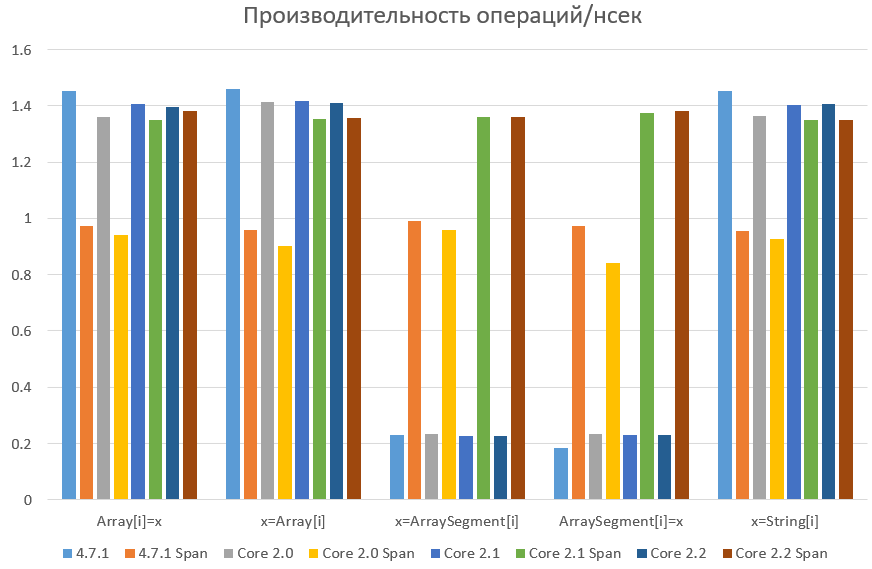

Начиная с версий .NET Core 2.0 и .NET Framework 4.5 нам стали доступны новые типы данных: это Span и Memory. Чтобы ими воспользоваться, достаточно установить nuget пакет System.Memory:
PM> Install-Package System.MemoryИ примечательны эти типы данных тем, что специально для них была проделана огромная работа командой CLR чтобы реализовать их специальную поддержку в коде JIT компилятора .NET Core 2.1+, вживив их прямо в ядро. Что это за типы данных и почему на них стоит выделить целую часть книги?
Если говорить о проблематике, приведшей к появлению данного функционала, я бы выбрал три основные. И первая из них - это неуправляемый код.
Как язык, так и платформа существуют уже много лет: и все это время существовало множество средств для работы с неуправляемым кодом. Так почему же сейчас выходит очередной API для работы с неуправляемым кодом, если, по сути, он существовал уже много-много лет? Для того чтобы ответить на этот вопрос, достаточно понять, чего не хватало нам раньше.
Разработчики платформы и раньше пытались нам помочь скрасить будни разработки с использованием неуправляемых ресурсов: это и автоматические врапперы для импортируемых методов, и маршаллинг, который в большинстве случаев работает автоматически. Это также инструкция stackalloc, о которой говорится в главе про стек потока. Однако, как по мне если ранние разработчики с использованием языка C# приходили из мира C++ (как сделал это и я), то сейчас они приходят из более высокоуровневых языков (я, например, знаю разработчика, который пришел из JavaScript). Это означает, что люди со все большим подозрением начинают относиться к неуправляемым ресурсам и конструкциям, близким по духу к C/C++, и уж тем более - к языку Ассемблера.
Как результат такого отношения - все меньшее и меньшее содержание unsafe кода в проектах и все большее доверие к API самой платформы. Это легко проверяется, если поискать использование конструкции stackalloc по открытым репозиториям: оно ничтожно мало. Но если взять любой код, который его использует:
Класс Interop.ReadDir /src/mscorlib/shared/Interop/Unix/System.Native/Interop.ReadDir.cs
unsafe { // s_readBufferSize is zero when the native implementation does not support reading into a buffer. byte* buffer = stackalloc byte[s_readBufferSize]; InternalDirectoryEntry temp; int ret = ReadDirR(dir.DangerousGetHandle(), buffer, s_readBufferSize, out temp); // We copy data into DirectoryEntry to ensure there are no dangling references. outputEntry = ret == 0 ? new DirectoryEntry() { InodeName = GetDirectoryEntryName(temp), InodeType = temp.InodeType } : default(DirectoryEntry); return ret; }
Становится понятна причина непопулярности. Посмотрите, не вчитываясь в код, и ответьте для себя на один вопрос: доверяете ли вы ему? Могу предположить, что ответом будет "нет". Тогда ответьте на другой: почему? Ответ будет очевиден: помимо того что мы видим слово Dangerous, которое как бы намекает, что что-то может пойти не так, второй фактор, влияющий на наше отношение, - это запись unsafe и строчка byte* buffer = stackalloc byte[s_readBufferSize];, а если еще конкретнее - byte*. Эта запись - триггер для любого, чтобы в голове появилась мысль: "а что, по-другому сделать нельзя было что ли?". Тогда давайте еще чуть-чуть разберемся с психоанализом: отчего может возникнуть подобная мысль? С одной стороны мы пользуемся конструкциями языка и предложенный здесь синтаксис далек от, например, C++/CLI, который позволяет делать вообще все что угодно (в том числе делать вставки на чистом Assembler), а с другой он выглядит непривычно.
Второй вопрос, который явно или неявно возникал в головах у многих разработчиков - это несовместимость типов: строки string и массива символов char[], хотя чисто логически строка - это и есть массив символов, привести string к char[] возможности нет никакой: только создание нового объекта и копирование содержимого строки в массив. Причем несовместимость такая введена для оптимизации строк с точки зрения хранения (readonly массивов не существует), но проблемы возникают, когда вы начинаете работать с файлами. Как прочитать? Строкой или массивом? Ведь если массивом, станет невозможным пользоваться некоторыми методами, рассчитанными на работу со строками. А если строкой? Может оказаться слишком длинной. Если речь идет о последующем парсинге, возникает вопрос выбора парсеров примитивов: далеко не всегда хочется парсить их все вручную (целые числа, числа с плавающей точкой, в разных форматах записанных). Есть же множество алгоритмов, проверенных годами, которые делают это быстро и эффективно. Но такие алгоритмы часто работают на строках, в которых кроме самого примитива ничего другого нет. Другими словами, дилемма.
Третья проблематика заключается в том, что необходимые для некоторого алгоритма данные редко лежат от начала и до самого конца считанного с некоторого источника массива. Например, если речь опять же идет о файлах или о данных, считанных с сокета, то есть некоторая уже обработанная неким алгоритмом часть, дальше идет то, что должен обработать некий наш метод, после чего идут данные, которые нам обработать, еще предстоит. И этот самый метод в идеале хочет, чтобы ему отдали только то, что он ожидает. Например, метод парсинга целых чисел вряд ли будет сильно благодарен, если вы отдадите ему строку с разговором о чём-либо, где в некоторой позиции будет находиться нужное число. Такой метод ожидает, что вы отдадите ему число и ничего больше. Если же мы отдадим массив целиком, то возникает требование указать, например, смещение числа относительно начала массива:
int ParseInt(char[] input, int index) { while(char.IsDigit(input[index])) { // ... index++; } }
Однако данный способ плох тем, что метод получает данные, которые ему не нужны. Другими словами, метод не введен в контекст своей задачи. Ведь помимо своей задачи метод решает еще и некоторую внешнюю. А это - признак плохого проектирования. Как избежать данной проблемы? Как вариант, можно воспользоваться типом ArraySegment<T>, суть которого - предоставить "окно" в некий массив:
int ParseInt(IList<char>[] input) { while(char.IsDigit(input.Array[index])) { // ... index++; } } var arraySegment = new ArraySegment(array, from, length); var res = ParseInt((IList<char>)arraySegment);
Но как по мне, так это - перебор, как с точки зрения логики, так и с точки зрения просадки по производительности. ArraySegment - ужасно сделан и обеспечивает замедление доступа к элементам в 7 раз относительно тех же самых операций, но с массивом.
Так как же решить все эти проблемы? Как вернуть разработчиков обратно в лоно неуправляемого кода, при этом дав им механизм унифицированной и быстрой работы с разнородными источниками данных: массивами, строками и неуправляемой памятью? Необходимо дать им чувство спокойствия, что они не могут сделать ошибку случайно, по незнанию. Необходимо дать им инструмент, не уступающий в производительности нативным типам данных, но решающих перечисленные проблемы. Этим инструментом являются типы Span<T> и Memory<T>.
Тип Span олицетворяет собой инструмент для работы с данными части некоторого массива данных либо поддиапазона его значений. При этом позволяя, как и в случае массива работать с элементами этого диапазона, как на запись, так и на чтение, но с одним важным ограничением: Span<T> вы получаете или создаете только для того, чтобы временно поработать с массивом. В рамках вызова группы методов, но не более того. Однако давайте для разгона и общего понимания сравним типы данных, для которых сделана реализация типа Span, и посмотрим на возможные сценарии для работы с ним.
Первый тип данных, о котором хочется завести речь, - это обычный массив. Для массивов работа со Span будет выглядеть следующим образом:
var array = new [] {1,2,3,4,5,6};
var span = new Span<int>(array, 1, 3);
var position = span.BinarySearch(3);
Console.WriteLine(span[position]); // -> 3
Как мы видим в данном примере, для начала мы создаем некий массив данных. После этого мы создаем Span (или подмножество), который, ссылаясь на сам массив, разрешает доступ использующему его коду только в тот диапазон значений, который был указан при инициализации.
Тут мы видим первое свойство этого типа данных: это создание некоторого контекста. Давайте разовьем нашу идею с контекстами:
void Main() { var array = new [] {'1','2','3','4','5','6'}; var span = new Span<char>(array, 1, 3); if(TryParseInt32(span, out var res)) { Console.WriteLine(res); } else { Console.WriteLine("Failed to parse"); } } public bool TryParseInt32(Span<char> input, out int result) { result = 0; for (int i = 0; i < input.Length; i++) { if(input[i] < '0' || input[i] > '9') return false; result = result * 10 + ((int)input[i] - '0'); } return true; } ----- 234
Как мы видим, Span<T> вводит абстракцию доступа к некоторому участку памяти, как на чтение, так и на запись. Что нам это дает? Если вспомнить, на основе чего еще может быть сделан Span, то мы вспомним как про неуправляемые ресурсы, так и про строки:
// Managed array var array = new[] { '1', '2', '3', '4', '5', '6' }; var arrSpan = new Span<char>(array, 1, 3); if (TryParseInt32(arrSpan, out var res1)) { Console.WriteLine(res1); } // String var srcString = "123456"; var strSpan = srcString.AsSpan(); if (TryParseInt32(arrSpan, out var res2)) { Console.WriteLine(res2); } // void * Span<char> buf = stackalloc char[6]; buf[0] = '1'; buf[1] = '2'; buf[2] = '3'; buf[3] = '4'; buf[4] = '5'; buf[5] = '6'; if (TryParseInt32(arrSpan, out var res3)) { Console.WriteLine(res3); } ----- 234 234 234
Т.е., получается, что Span<T> - это средство унификации по работе с памятью: управляемой и неуправляемой, которое гарантирует безопасность в работе с такого рода данными во время Garbage Collection: если участки памяти с управляемыми массивами начнут двигаться, то для нас это будет безопасно.
Однако, стоит ли так сильно радоваться? Можно ли было всего этого добиться и раньше? Например, если говорить об управляемых массивах, то тут даже сомневаться не приходится: достаточно просто обернуть массив в еще один класс (например давно существующий ArraySegment), предоставив аналогичный интерфейс, и все готово. Мало того, аналогичную операцию можно проделать и со строками: они обладают необходимыми методами. Опять же, достаточно строку завернуть в точно такой же тип и предоставить методы по работе с ней. Другое дело, что для того чтобы хранить в одном типе строку, буфер или массив, придется сильно повозиться, храня в едином экземпляре ссылки на каждый из возможных вариантов (активным, понятное дело, будет только один):
public readonly ref struct OurSpan<T> { private T[] _array; private string _str; private T * _buffer; // ... }
Или же если отталкиваться от архитектуры, то делать три типа, которые наследуют единый интерфейс. Получается, что невозможно сделать средство единого интерфейса, отличное от Span<T>, между этими типами данных, сохранив при этом максимальную производительность.
Далее, если продолжить рассуждения, то, что такое ref struct в понятиях Span? Это именно те самые "структуры, они только на стеке", о которых мы так часто слышим на собеседованиях. А это значит, что этот тип данных может идти только через стек и не имеет права уходить в кучу. А потому Span, будучи ref структурой, является контекстным типом данных, обеспечивающим работу методов, но не объектов в памяти. От этого для его понимания и надо отталкиваться.
Отсюда мы можем сформулировать определение типа Span и связанного с ним readonly типа ReadOnlySpan:
Span - это тип данных, обеспечивающий единый интерфейс работы с разнородными типами массивов данных, а также возможность передать в другой метод подмножество этого массива таким образом, чтобы вне зависимости от глубины взятия контекста скорость доступа к исходному массиву была константной и максимально высокой.
И действительно: если мы имеем примерно такой код:
public void Method1(Span<byte> buffer) { buffer[0] = 0; Method2(buffer.Slice(1,2)); } Method2(Span<byte> buffer) { buffer[0] = 0; Method3(buffer.Slice(1,1)); } Method3(Span<byte> buffer) { buffer[0] = 0; }
то скорость доступа к исходному буферу будет максимально высокой: вы работаете не с managed объектом, а с managed указателем. Т.е. не с .NET managed типом, а с unsafe типом, заключенным в managed оболочку.
Человек так устроен, что зачастую пока он не получит определенного опыта, то конечного понимания, для чего необходим инструмент, часто не приходит. А потому, поскольку нам нужен некий опыт, давайте обратимся к примерам.
Одним из самых алгоритмически интересных примеров является тип ValueStringBuilder, который прикопан где-то в недрах mscorlib и почему-то, как и многие другие интереснейшие типы данных помечен модификатором internal, что означает, что, если бы не исследование исходного кода mscorlib, о таком замечательном способе оптимизации мы бы никогда не узнали.
Каков основной минус системного типа StringBuilder? Это, конечно же, его суть: как он сам, так и то, на чем он основан (а это - массив символов char[]) - являются типами ссылочными. А это значит как минимум две вещи: мы все равно (хоть и немного) нагружаем кучу и второе - увеличиваем шансы промаха по кэшам процессора.
Еще один вопрос, который у меня возникал к StringBuilder - это формирование маленьких строк. Т.е. когда результирующая строка "зуб даю" будет короткой: например, менее 100 символов. Когда мы имеем достаточно короткие форматирования, к производительности возникают вопросы:
$"{x} is in range [{min};{max}]"
Насколько эта запись хуже, чем ручное формирование через StringBuilder? Ответ далеко не всегда очевиден: все сильно зависит от места формирования: как часто будет вызван данный метод. Ведь сначала string.Format выделяет память под внутренний StringBuilder, который создаст массив символов (SourceString.Length + args.Length * 8) и если в процессе формирования массива выяснится, что длина не была угадана, то для формирования продолжения будет создан еще один StringBuilder, формируя тем самым односвязный список. А в результате - необходимо будет вернуть сформированную строку: а это еще одно копирование. Транжирство и расточительство. Вот если бы избавиться от размещения в куче первого массива формируемой строки, было бы замечательно: от одной проблемы мы бы точно избавились.
Взглянем на тип из недр mscorlib:
Класс ValueStringBuilder /src/mscorlib/shared/System/Text/ValueStringBuilder
internal ref struct ValueStringBuilder
{
// это поле будет активно если у нас слишком много символов
private char[] _arrayToReturnToPool;
// это поле будет основным
private Span<char> _chars;
private int _pos;
// тип принимает буфер извне, делигируя выбор его размера вызывающей стороне
public ValueStringBuilder(Span<char> initialBuffer)
{
_arrayToReturnToPool = null;
_chars = initialBuffer;
_pos = 0;
}
public int Length
{
get => _pos;
set
{
int delta = value - _pos;
if (delta > 0)
{
Append('\0', delta);
}
else
{
_pos = value;
}
}
}
// Получение строки - копирование символов из массива в массив
public override string ToString()
{
var s = new string(_chars.Slice(0, _pos));
Clear();
return s;
}
// Вставка в середину сопровождается раздвиганием символов
// исходной строки чтобы вставить необходимый: путем копирования
public void Insert(int index, char value, int count)
{
if (_pos > _chars.Length - count)
{
Grow(count);
}
int remaining = _pos - index;
_chars.Slice(index, remaining).CopyTo(_chars.Slice(index + count));
_chars.Slice(index, count).Fill(value);
_pos += count;
}
[MethodImpl(MethodImplOptions.AggressiveInlining)]
public void Append(char c)
{
int pos = _pos;
if (pos < _chars.Length)
{
_chars[pos] = c;
_pos = pos + 1;
}
else
{
GrowAndAppend(c);
}
}
[MethodImpl(MethodImplOptions.NoInlining)]
private void GrowAndAppend(char c)
{
Grow(1);
Append(c);
}
// Если исходного массива, переданного конструктором, не хватило
// мы выделяем массив из пула свободных необходимого размера
// На самом деле идеально было бы, если бы алгоритм дополнительно создавал
// дискретность в размерах массивов чтобы пул не был бы фрагментированным
[MethodImpl(MethodImplOptions.NoInlining)]
private void Grow(int requiredAdditionalCapacity)
{
Debug.Assert(requiredAdditionalCapacity > _chars.Length - _pos);
char[] poolArray = ArrayPool<char>.Shared.Rent(Math.Max(_pos + requiredAdditionalCapacity, _chars.Length * 2));
_chars.CopyTo(poolArray);
char[] toReturn = _arrayToReturnToPool;
_chars = _arrayToReturnToPool = poolArray;
if (toReturn != null)
{
ArrayPool<char>.Shared.Return(toReturn);
}
}
[MethodImpl(MethodImplOptions.AggressiveInlining)]
private void Clear()
{
char[] toReturn = _arrayToReturnToPool;
this = default; // for safety, to avoid using pooled array if this instance is erroneously appended to again
if (toReturn != null)
{
ArrayPool<char>.Shared.Return(toReturn);
}
}
// Пропущенные методы: с ними и так все ясно
private void AppendSlow(string s);
public bool TryCopyTo(Span<char> destination, out int charsWritten);
public void Append(string s);
public void Append(char c, int count);
public unsafe void Append(char* value, int length);
public Span<char> AppendSpan(int length);
}
Этот класс по своему функционалу сходен со своим старшим собратом StringBuilder, обладая при этом одной интересной и очень важной особенностью: он является значимым типом. Т.е. хранится и передается целиком по значению. А новейший модификатор типа ref, который приписан к сигнатуре объявления типа, говорит нам о том, что данный тип обладает дополнительным ограничением: он имеет право находиться только на стеке. Т.е. вывод его экземпляров в поля классов приведет к ошибке. К чему все эти приседания? Для ответа на этот вопрос достаточно посмотреть на класс StringBuilder, суть которого мы только что описали:
Класс StringBuilder /src/mscorlib/src/System/Text/StringBuilder.cs
public sealed class StringBuilder : ISerializable { // A StringBuilder is internally represented as a linked list of blocks each of which holds // a chunk of the string. It turns out string as a whole can also be represented as just a chunk, // so that is what we do. internal char[] m_ChunkChars; // The characters in this block internal StringBuilder m_ChunkPrevious; // Link to the block logically before this block internal int m_ChunkLength; // The index in m_ChunkChars that represent the end of the block internal int m_ChunkOffset; // The logical offset (sum of all characters in previous blocks) internal int m_MaxCapacity = 0; // ... internal const int DefaultCapacity = 16;
StringBuilder - это класс, внутри которого находится ссылка на массив символов. Т.е. когда вы создаете его, то по сути создается как минимум два объекта: сам StringBuilder и массив символов в как минимум 16 символов (кстати именно поэтому так важно задавать предполагаемую длину строки: ее построение будет идти через генерацию односвязного списка 16-символьных массивов. Согласитесь, расточительство). Что это значит в контексте нашего разговора о типе ValueStringBuilder: capacity по умолчанию отсутствует, т.к. он заимствует память извне, плюс он сам является значимым типом и заставляет пользователя расположить буфер для символов на стеке. Как итог весь экземпляр типа помещается на стек вместе с его содержимым и вопрос оптимизации здесь становится решенным. Нет выделения памяти в куче? Нет проблем с проседанием производительности по куче. Но вы мне скажите: почему тогда не пользоваться ValueStringBuilder (или его самописной версией: сам он internal и нам не доступен) всегда? Ответ такой: надо смотреть на задачу, которая вами решается. Будет ли результирующая строка известного размера? Будет ли она иметь некий известный максимум по длине? Если ответ "да" и если при этом размер строки не выходит за некоторые разумные границы, то можно использовать значимую версию StringBuilder. Иначе, если мы ожидаем длинные строки, переходим на использование обычной версии.
internal ref partial struct ValueListBuilder<T> { private Span<T> _span; private T[] _arrayFromPool; private int _pos; public ValueListBuilder(Span<T> initialSpan) { _span = initialSpan; _arrayFromPool = null; _pos = 0; } public int Length { get; set; } public ref T this[int index] { get; } [MethodImpl(MethodImplOptions.AggressiveInlining)] public void Append(T item); public ReadOnlySpan<T> AsSpan(); [MethodImpl(MethodImplOptions.AggressiveInlining)] public void Dispose(); private void Grow(); }
Второй тип данных, который хочется особенно - отметить - это тип ValueListBuilder. Создан он для ситуаций, когда необходимо на короткое время создать некоторую коллекцию элементов и тут же отдать ее в обработку некоторому алгоритму.
Согласитесь: задача очень похожа на задачу ValueStringBuilder. Да и решена она очень похожим образом:
Файл ValueListBuilder.cs
Если говорить прямо, то такие ситуации достаточно частые. Однако раньше мы решали этот вопрос другим способом: создавали List, заполняли его данными и теряли ссылку. Если при этом метод вызывается достаточно часто, возникает печальная ситуация: множество экземпляров класса List повисает в куче, а вместе с ними повисают в куче и массивы, с ними ассоциированные. Теперь эта проблема решена: дополнительных объектов создано не будет. Однако, как и в случае с ValueStringBuilder, решена она только для программистов Microsoft: класс имеет модификатор internal.
Для того чтобы окончательно понять суть нового типа данных, необходимо "поиграться" с ним, написав пару-тройку, а лучше - больше методов, его использующих. Однако, основные правила можно почерпнуть уже сейчас:
Span. Если при этом не будет модификации этого буфера, то на типе ReadOnlySpan;ReadOnlySpan<char>. Именно обязан: это новое правило. Ведь если вы принимаете строку, тем самым вы заставляете кого-то сделать для вас подстрокуSpan<TType> buf = stackalloc TType[size]. Однако, конечно, TType должен быть только значимым типом, т.к. stackalloc работает только со значимыми типами.В остальных случаях стоит присмотреться либо к Memory либо использовать классические типы данных.
Дополнительно хотелось бы поговорить о том, как работает Span и что в нем такого примечательного. А поговорить есть о чем: сам тип данных делится на две версии: для .NET Core 2.0+ и для всех остальных.
Файл Span.Fast.cs, .NET Core 2.0
public readonly ref partial struct Span<T> { /// Ссылка на объект .NET или чистый указатель internal readonly ByReference<T> _pointer; /// Длина буфера данных по указателю private readonly int _length; // ... }
Файл ??? [decompiled]
public ref readonly struct Span<T> { private readonly System.Pinnable<T> _pinnable; private readonly IntPtr _byteOffset; private readonly int _length; // ... }
Все дело в том что большой .NET Framework и .NET Core 1.* не имеют специальным образом измененного сборщика мусора (в отличии от версии .NET Core 2.0+) и потому вынуждены тащить за собой дополнительный указатель: на начало буфера, с которым идет работа. Т.е. получается, что Span внутри себя работает с управляемыми объектами платформы .NET как с неуправляемыми. Взгляните на внутренности второго варианта структуры: там присутствует три поля. Первое поле - это ссылка на managed объект. Второе - смещение относительно начала этого объекта в байтах, чтобы получить начало буфера данных (в строках это буфер с символами char, в массивах - буфер с данными массива). И, наконец, третье поле - количество уложенных друг за другом элементов этого буфера.
Для примера возьмем работу Span для строк:
Файл coreclr::src/System.Private.CoreLib/shared/System/MemoryExtensions.Fast.cs
public static ReadOnlySpan<char> AsSpan(this string text) { if (text == null) return default; return new ReadOnlySpan<char>(ref text.GetRawStringData(), text.Length); }
Где string.GetRawStringData() выглядит следующим образом:
Файл с определением полей coreclr::src/System.Private.CoreLib/src/System/String.CoreCLR.cs
Файл с определением GetRawStringData coreclr::src/System.Private.CoreLib/shared/System/String.cs
public sealed partial class String : IComparable, IEnumerable, IConvertible, IEnumerable<char>, IComparable<string>, IEquatable<string>, ICloneable { // // These fields map directly onto the fields in an EE StringObject. See object.h for the layout. // [NonSerialized] private int _stringLength; // For empty strings, this will be '\0' since // strings are both null-terminated and length prefixed [NonSerialized] private char _firstChar; internal ref char GetRawStringData() => ref _firstChar; }
Т.е. получается, что метод лезет напрямую вовнутрь строки, а спецификация ref char позволяет отслеживать GC неуправляемую ссылку во внутрь строки, перемещая его вместе со строкой во время срабатывания GC.
Та же самая история происходит и с массивами: когда создается Span, то некий код внутри JIT рассчитывает смещение начала данных массива и этим смещением инициализирует Span. А как подсчитать смещения для строк и массивов, мы научились в главе про структуру объектов в памяти.
Несмотря на всю идиллию, связанную со Span, существуют хоть и логичные, но неожиданные ограничения на его возврат из метода. Если взглянуть на следующий код:
unsafe void Main() { var x = GetSpan(); } public Span<byte> GetSpan() { Span<byte> reff = new byte[100]; return reff; }
то все выглядит крайне логично и хорошо. Однако, стоит заменить одну инструкцию другой:
unsafe void Main() { var x = GetSpan(); } public Span<byte> GetSpan() { Span<byte> reff = stackalloc byte[100]; return reff; }
как компилятор запретит инструкцию такого вида. Но прежде чем написать, почему, я прошу вас самим догадаться, какие проблемы понесет за собой такая конструкция.
Итак, я надеюсь, что вы подумали, построили догадки и предположения, а может даже и поняли причину. Если так, главу про стек потока я по винтикам расписывал не зря. Ведь дав таким образом ссылку на локальные переменные метода, который закончил работу, вы можете вызвать другой метод, дождаться окончания его работы и через x[0.99] прочитать его локальные переменные.
Однако, к счастью, когда мы делаем попытку написать такого рода код, компилятор дает нам по рукам, выдав предупреждение: CS8352 Cannot use local 'reff' in this context because it may expose referenced variables outside of their declaration scope и будет прав: ведь если обойти эту ошибку, то возникает возможность, например, находясь в плагине подстроить такую ситуацию, что станет возможным украсть чужие пароли или повысить привилегии выполнения нашего плагина.
Визуальных отличий Memory<T> от Span<T> два. Первое - тип Memory<T> не содержит ограничения ref в заголовке типа. Т.е., другими словами, тип Memory<T> имеет право находиться не только на стеке, являясь либо локальной переменной, либо параметром метода, либо его возвращаемым значением, но и находиться в куче, ссылаясь оттуда на некоторые данные в памяти. Однако, эта маленькая разница создает огромную разницу в поведении и возможностях Memory<T> в сравнении с Span<T>. В отличии от Span<T>, который представляет собой средство пользования неким буфером данных для некоторых методов, тип Memory<T> предназначен для хранения информации о буфере, а не для работы с ним. Отсюда возникает разница в API:
Memory<T> не содержит методов доступа к данным, которыми он заведует. Вместо этого он имеет свойство Span и метод Slice, которые возвращают рабочую лошадку - экземпляр типа Span.Memory<T> дополнительно содержит метод Pin(), предназначенный для сценариев, когда хранящийся буфер необходимо передать в unsafe код. При его вызове для случаев, когда память была выделена в .NET, буфер будет закреплен (pinned) и не будет перемещаться при срабатывании GC, возвращая пользователю экземпляр структуры MemoryHandle, инкапсулирующей в себе понятие отрезка жизни GCHandle, закрепившего буфер в памяти.Однако, для начала предлагаю познакомиться со всем набором классов. И в качестве первого из них, взглянем на саму структуру Memory<T> (показаны не все члены типа, а показавшиеся наиболее важными):
public readonly struct Memory<T>
{
private readonly object _object;
private readonly int _index, _length;
public Memory(T[] array) { ... }
public Memory(T[] array, int start, int length) { ... }
internal Memory(MemoryManager<T> manager, int length) { ... }
internal Memory(MemoryManager<T> manager, int start, int length) { ... }
public int Length => _length & RemoveFlagsBitMask;
public bool IsEmpty => (_length & RemoveFlagsBitMask) == 0;
public Memory<T> Slice(int start, int length);
public void CopyTo(Memory<T> destination) => Span.CopyTo(destination.Span);
public bool TryCopyTo(Memory<T> destination) => Span.TryCopyTo(destination.Span);
public Span<T> Span { get; }
public unsafe MemoryHandle Pin();
}
Как мы видим, структура содержит конструктор на основе массивов, но хранит данные в object. Сделано это для того чтобы дополнительно ссылаться на строки, для которых конструктор не предусмотрен, зато предусмотрен метод расширения для типа string AsMemory(), возвращающий ReadOnlyMemory. Однако, поскольку бинарно оба типа должны быть одинаковыми, типом поля _object является Object.
Далее мы видим два конструктора, работающих на основе MemoryManager. О них мы поговорим попозже. Свойства получения размера Length и проверки на пустое множество IsEmpty. Также имеется метод получения подмножества Slice и методы копирования CopyTo и TryCopyTo.
Подробнее же в разговоре о Memory хочется остановиться на двух методах этого типа: на свойстве Span и методе Pin.
public Span<T> Span { get { if (_index < 0) { return ((MemoryManager<T>)_object).GetSpan().Slice(_index & RemoveFlagsBitMask, _length); } else if (typeof(T) == typeof(char) && _object is string s) { // This is dangerous, returning a writable span for a string that should be immutable. // However, we need to handle the case where a ReadOnlyMemory<char> was created from a string // and then cast to a Memory<T>. Such a cast can only be done with unsafe or marshaling code, // in which case that's the dangerous operation performed by the dev, and we're just following // suit here to make it work as best as possible. return new Span<T>(ref Unsafe.As<char, T>(ref s.GetRawStringData()), s.Length).Slice(_index, _length); } else if (_object != null) { return new Span<T>((T[])_object, _index, _length & RemoveFlagsBitMask); } else { return default; } } }
А точнее, на строчки, обрабатывающие работу со строками. Ведь в них говорится о том, что если мы каким-либо образом сконвертировали ReadOnlyMemory<T> в Memory<T> (а в двоичном представлении это одно и тоже. Мало того, существует комментарий, предупреждающий, что бинарно эти два типа обязаны совпадать, т.к. один из другого получается путем вызова Unsafe.As), то мы получаем доступ в тайную комнату возможность менять строки. А это крайне опасный механизм:
unsafe void Main() { var str = "Hello!"; ReadOnlyMemory<char> ronly = str.AsMemory(); Memory<char> mem = (Memory<char>)Unsafe.As<ReadOnlyMemory<char>, Memory<char>>(ref ronly); mem.Span[5] = '?'; Console.WriteLine(str); } --- Hello?
Который в купе с интернированием строк может дать весьма плачевные последствия.
Второй метод, который вызывает не поддельный интерес - это метод Pin:
public unsafe MemoryHandle Pin() { if (_index < 0) { return ((MemoryManager<T>)_object).Pin((_index & RemoveFlagsBitMask)); } else if (typeof(T) == typeof(char) && _object is string s) { // This case can only happen if a ReadOnlyMemory<char> was created around a string // and then that was cast to a Memory<char> using unsafe / marshaling code. This needs // to work, however, so that code that uses a single Memory<char> field to store either // a readable ReadOnlyMemory<char> or a writable Memory<char> can still be pinned and // used for interop purposes. GCHandle handle = GCHandle.Alloc(s, GCHandleType.Pinned); void* pointer = Unsafe.Add<T>(Unsafe.AsPointer(ref s.GetRawStringData()), _index); return new MemoryHandle(pointer, handle); } else if (_object is T[] array) { // Array is already pre-pinned if (_length < 0) { void* pointer = Unsafe.Add<T>(Unsafe.AsPointer(ref array.GetRawSzArrayData()), _index); return new MemoryHandle(pointer); } else { GCHandle handle = GCHandle.Alloc(array, GCHandleType.Pinned); void* pointer = Unsafe.Add<T>(Unsafe.AsPointer(ref array.GetRawSzArrayData()), _index); return new MemoryHandle(pointer, handle); } } return default; }
Который также является очень важным инструментом унификации: ведь вне зависимости от типа данных, на которые ссылается Memory<T>, если мы захотим отдать буфер в неуправляемый код, то единственное, что нам надо сделать - вызвать метод Pin() и передать указатель, который будет храниться в свойстве полученной структуры в неуправляемый код:
void PinSample(Memory<byte> memory) { using(var handle = memory.Pin()) { WinApi.SomeApiMethod(handle.Pointer); } }
И в данном коде нет никакой разницы, для чего вызван Pin(): для Memory над T[], над string или же над буфером неуправляемой памяти. Просто для массивов и строк будет создан реальный GCHandle.Alloc(array, GCHandleType.Pinned), а для неуправляемой памяти - просто ничего не произойдет.
Помимо указания полей структуры я хочу дополнительно указать на то, что существует еще два internal конструктора типа, работающих на основании еще одной сущности - MemoryManager, речь о котором зайдет несколько дальше и что не является чем-то, о чем вы, возможно, только что подумали: менеджером памяти в классическом понимании. Однако, как и Span, Memory точно также содержит в себе ссылку на объект, по которому будет производиться навигация, а также смещение и размер внутреннего буфера. Также дополнительно стоит отметить, что Memory может быть создан оператором new только на основании массива плюс методами расширения - на основании строки, массива и ArraySegment. Т.е. его создание на основании unmanaged памяти вручную не подразумевается. Однако, как мы видим, существует некий внутренний метод создания этой структуры на основании MemoryManager:
Файл MemoryManager.cs
public abstract class MemoryManager<T> : IMemoryOwner<T>, IPinnable { public abstract MemoryHandle Pin(int elementIndex = 0); public abstract void Unpin(); public virtual Memory<T> Memory => new Memory<T>(this, GetSpan().Length); public abstract Span<T> GetSpan(); protected Memory<T> CreateMemory(int length) => new Memory<T>(this, length); protected Memory<T> CreateMemory(int start, int length) => new Memory<T>(this, start, length); void IDisposable.Dispose() protected abstract void Dispose(bool disposing); }
Которая инкапсулирует в себе понятие владельца участка памяти. Другими словами, если Span - средство работы с памятью, а Memory - средство хранения информации о конкретном участке, то MemoryManager - средство контроля его жизни, его владелец. Для примера можно взять тип NativeMemoryManager<T>, который хоть и написан для тестов, однако неплохо отражает суть понятия "владение":
internal sealed class NativeMemoryManager : MemoryManager<byte> { private readonly int _length; private IntPtr _ptr; private int _retainedCount; private bool _disposed; public NativeMemoryManager(int length) { _length = length; _ptr = Marshal.AllocHGlobal(length); } public override void Pin() { ... } public override void Unpin() { lock (this) { if (_retainedCount > 0) { _retainedCount--; if (_retainedCount == 0) { if (_disposed) { Marshal.FreeHGlobal(_ptr); _ptr = IntPtr.Zero; } } } } } // Другие методы }
Т.е., другими словами, класс обеспечивает возможность вложенных вызовов метода Pin() подсчитывая тем самым образующиеся ссылки из unsafe мира.
Еще одной сущностью, тесно связанной с Memory, является MemoryPool, который обеспечивает пулинг экземпляров MemoryManager (а по факту - IMemoryOwner):
Файл MemoryPool.cs
public abstract class MemoryPool<T> : IDisposable { public static MemoryPool<T> Shared => s_shared; public abstract IMemoryOwner<T> Rent(int minBufferSize = -1); public void Dispose() { ... } }
Который предназначен для выдачи буферов необходимого размера во временное пользование. Арендуемые экземпляры, реализующие интерфейс IMemoryOwner<T>, имеют метод Dispose(), который возвращает арендованный массив обратно в пул массивов. Причем, по умолчанию вы можете пользоваться общим пулом буферов, который построен на основе ArrayMemoryPool:
Файл ArrayMemoryPool.cs
internal sealed partial class ArrayMemoryPool<T> : MemoryPool<T> { private const int MaximumBufferSize = int.MaxValue; public sealed override int MaxBufferSize => MaximumBufferSize; public sealed override IMemoryOwner<T> Rent(int minimumBufferSize = -1) { if (minimumBufferSize == -1) minimumBufferSize = 1 + (4095 / Unsafe.SizeOf<T>()); else if (((uint)minimumBufferSize) > MaximumBufferSize) ThrowHelper.ThrowArgumentOutOfRangeException(ExceptionArgument.minimumBufferSize); return new ArrayMemoryPoolBuffer(minimumBufferSize); } protected sealed override void Dispose(bool disposing) { } }
И на основании данной архитектуры вырисовывается следующая картина мира:
Span необходимо использовать в параметрах методов, если вы подразумеваете либо считывание данных (ReadOnlySpan), либо считывание или запись (Span). Но не задачу его сохранения в поле класса для использования в будущемMemory<T> или ReadOnlyMemory<T> - в зависимости от целейMemoryManager<T> - это владелец буфера данных (можно не использовать: по необходимости). Необходим, когда, например, встает необходимость подсчитывать вызовы Pin(). Или когда необходимо обладать знаниями о том, как освобождать памятьMemory построен вокруг неуправляемого участка памяти, Pin() ничего не сделает. Однако это унифицирует работу с разными типами буферов: как в случае управляемого, так и в случае неуправляемого кода интерфейс взаимодействия будет одинаковымSpan напрямую, так и получать его экземпляр из Memory. Сам Memory вы можете создать как отдельно, так и организовать для него IMemoryOwner тип, который будет владеть участком памяти, на который будет ссылаться Memory. Частным случаем может являться любой тип, основанный на MemoryManager: некоторое локальное владение участком памяти (например, с подсчетом ссылок из unsafe мира). Если при этом необходим пулинг таких буферов (ожидается частый трафик буферов примерно равного размера), можно воспользоваться типом MemoryPool.unsafe кодом, передавая туда некий буфер данных, стоит использовать тип Memory: он имеет метод Pin(), автоматизирующий фиксацию буфера в куче .NET, если тот был там создан.MemoryPool, который можно организовать очень правильным образом, выдавая из пула буферы подходящего размера (например, немного большего, если не нашлось подходящего, но с обрезкой originalMemory.Slice(requiredSize) чтобы не фрагментировать пул)Для того чтобы понять производительность новых типов данных, я решил воспользоваться уже ставшей стандартной библиотекой BenchmarkDotNet:
[Config(typeof(MultipleRuntimesConfig))] public class SpanIndexer { private const int Count = 100; private char[] arrayField; private ArraySegment<char> segment; private string str; [GlobalSetup] public void Setup() { str = new string(Enumerable.Repeat('a', Count).ToArray()); arrayField = str.ToArray(); segment = new ArraySegment<char>(arrayField); } [Benchmark(Baseline = true, OperationsPerInvoke = Count)] public int ArrayIndexer_Get() { var tmp = 0; for (int index = 0, len = arrayField.Length; index < len; index++) { tmp = arrayField[index]; } return tmp; } [Benchmark(OperationsPerInvoke = Count)] public void ArrayIndexer_Set() { for (int index = 0, len = arrayField.Length; index < len; index++) { arrayField[index] = '0'; } } [Benchmark(OperationsPerInvoke = Count)] public int ArraySegmentIndexer_Get() { var tmp = 0; var accessor = (IList<char>)segment; for (int index = 0, len = accessor.Count; index < len; index++) { tmp = accessor[index]; } return tmp; } [Benchmark(OperationsPerInvoke = Count)] public void ArraySegmentIndexer_Set() { var accessor = (IList<char>)segment; for (int index = 0, len = accessor.Count; index < len; index++) { accessor[index] = '0'; } } [Benchmark(OperationsPerInvoke = Count)] public int StringIndexer_Get() { var tmp = 0; for (int index = 0, len = str.Length; index < len; index++) { tmp = str[index]; } return tmp; } [Benchmark(OperationsPerInvoke = Count)] public int SpanArrayIndexer_Get() { var span = arrayField.AsSpan(); var tmp = 0; for (int index = 0, len = span.Length; index < len; index++) { tmp = span[index]; } return tmp; } [Benchmark(OperationsPerInvoke = Count)] public int SpanArraySegmentIndexer_Get() { var span = segment.AsSpan(); var tmp = 0; for (int index = 0, len = span.Length; index < len; index++) { tmp = span[index]; } return tmp; } [Benchmark(OperationsPerInvoke = Count)] public int SpanStringIndexer_Get() { var span = str.AsSpan(); var tmp = 0; for (int index = 0, len = span.Length; index < len; index++) { tmp = span[index]; } return tmp; } [Benchmark(OperationsPerInvoke = Count)] public void SpanArrayIndexer_Set() { var span = arrayField.AsSpan(); for (int index = 0, len = span.Length; index < len; index++) { span[index] = '0'; } } [Benchmark(OperationsPerInvoke = Count)] public void SpanArraySegmentIndexer_Set() { var span = segment.AsSpan(); for (int index = 0, len = span.Length; index < len; index++) { span[index] = '0'; } } } public class MultipleRuntimesConfig : ManualConfig { public MultipleRuntimesConfig() { Add(Job.Default .With(CsProjClassicNetToolchain.Net471) // Span не поддерживается CLR .WithId(".NET 4.7.1")); Add(Job.Default .With(CsProjCoreToolchain.NetCoreApp20) // Span поддерживается CLR .WithId(".NET Core 2.0")); Add(Job.Default .With(CsProjCoreToolchain.NetCoreApp21) // Span поддерживается CLR .WithId(".NET Core 2.1")); Add(Job.Default .With(CsProjCoreToolchain.NetCoreApp22) // Span поддерживается CLR .WithId(".NET Core 2.2")); } }
После чего изучим результаты:

Смотря на них можно почерпнуть следующую информацию:
Span. Производительность вырастет при этом в 7 раз;.NET Framework 4.7.1 (а для 4.5 это будет аналогичным), то переход на Span заметно просадит работу с буферами данных. Примерно на 30-35%;Отсюда можно сделать простые выводы по использованию этих типов данных:
.NET Framework 4.5+ и .NET Core их использование даст только один плюс: они быстрее их альтернативы в виде ArraySegment - на подмножестве исходного массива;.NET Core 2.1+ их использование даст неоспоримое преимущество как перед использованием ArraySegment, так и перед любыми видами ручной реализации Slice